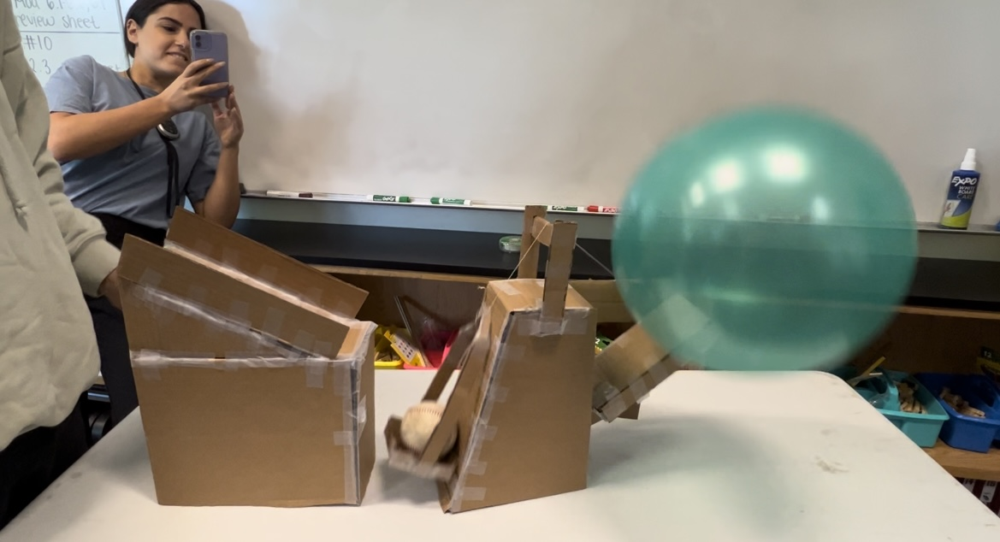
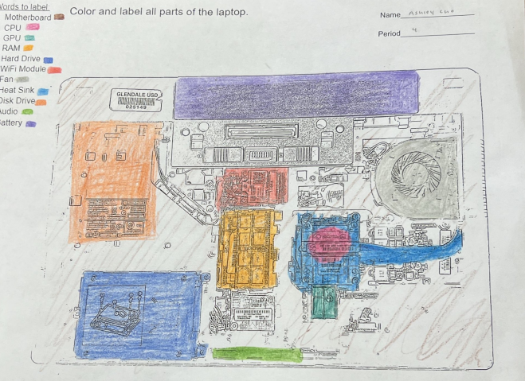
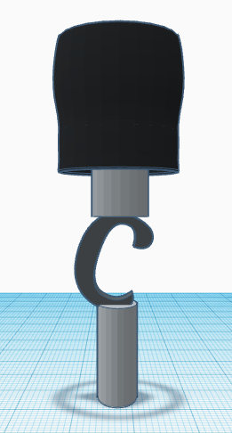
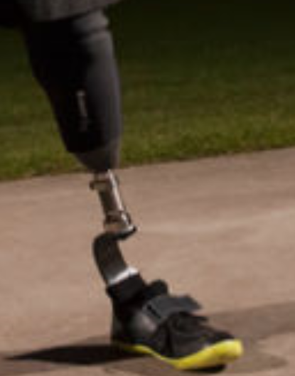
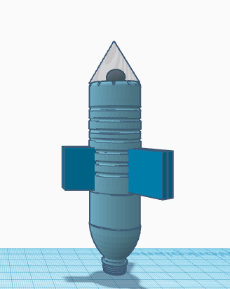
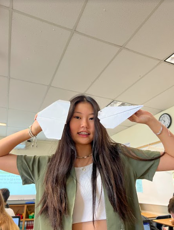
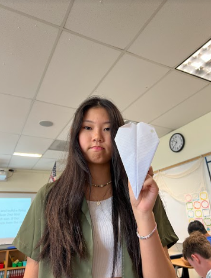
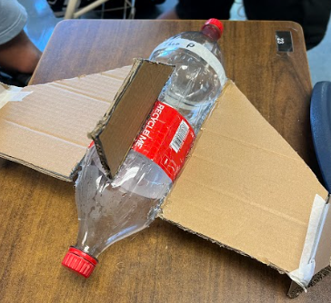
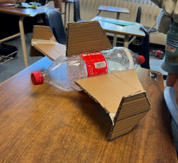

Ashley's Website
Glad you're here!
My Journal
8/29/22 - 9/2/22
Week 2
This week we worked on creating our Rube Goldberg Machines. I created a pulley, a lever, and a inclined plane. We also worked on a challenge which allowed us to create 3D desgins on tinkercad.
For my challenge, my reference was a 23lb dumbell. We had two judges who choose the best design, I didn'win :(
Throguh this challenge I learned how hard it is important to be specific. I also learned that creating things online is pretty hard. A challenge I had
was to duplicate/overlap shapes together. My friend taught me how to solve this problem. She told me how the measurements are very important and can help us align things.
9/5/22 - 9/9/22
Week 3
This week we finalized creating our Machine and decided on which machine we would decide. We decided to go with Theo's desgin. It was unique and different from all of ours.
Instead of the common choice of using a incline plane to pop the ballon, he did something different. He used strings to play out an action which then lead to another action.
On Friday, we worked on our Challenge #3. We designed the letter E and had one of out classmates use our design to cut out the letter E.
Through this challenge I learned how important measurements are. Not only that, but I also learned that the measurements need to be accurate. An example is that the left height (|) of the E
has to equal the three small lengths (-) of the E.
9/12/22 - 9/16/22
Week 4
On Monday we discussed some of the challenges people had with Challenge #3. We also talked about what we learned through this challenge. After, we broke into our groups.
We started to create our Rube Goldberg Machine. Since it was banking day we couldn't finish much. We discussed what materials we need to bring and talked about how we planned on creating the model.
On Wednesday we finalized creating our machine. Theo drew out the shapes needed for the machine and the rest of us either cut or folded those shapes. Our machine works!
I learned that engineering requires teamwork and deatialed measurements. On Friday, we made paper boats that can float on water with weights.
Our team lost right away because I thoguht the smaller the surface area, the longer it floats. I was mistaken, we had to creater a baot
with a large surface area in order for the boat to float with heavy weights.

9/19/22 - 9/23/22
Week 5
On Wednesday, we tested our Rube Goldberg Machines; it worked! Our group was the first group to actually pop the ballon. Through this machine
making project I think I was able to learn a lot. I never imagined that being specific is really important in engineering. I also learned how
to use tinkercads. On Friday we worked on finalizing our machines. My group already tested, so I just worked
on my website. I created dash lines to separate the weeks. I also created a boarder around the images.
Thanks to these features, now my website looks a lot neater.

9/26/22 - 9/30/22
Week 6
On Wednesday, we started dissecting computers. The most important part was to know which skwer belonged to what.
In order to keep track, we had to write down all our steps. Also a guest speaker came and talked to us about computer engineering.
Even though I'm not interested in computers, I enjoyed dissecting the computers and learning about all their parts. On Friday we started coloring in our
computer parts worksheet. I learned more about the "computer vocabulary." We also worked on putting back our computer parts. Through this dissection I learned more abour
computer parts. I also learned how complicated computers can be.


10/3/22 - 10/7/22
Week 7
On Monday we talked about what we learned through dissecuting computers. We also got an introduction to bioengineering. Even though I'm not
interested in this pathway, I was invested in the making of scientific products. Such as, hearing aids and fake/mechanical arms and legs.
On Wednesday, we researched an animal who lost a body part. I choose a horse without a leg, so my job is to use tinkercad
to design a prosthetic leg for that horse. Some of the materails I will be using are a titanium and a 3D printed, sock like thing. The picture on the right
is my reference image and the picture on the right is my design. As you can see through the tinkercad image, I my three parts: the black part, the "C", and
a gray part. The black part acts like a sock which helps hold the horse's leg. The "C" is like the knee, which allows the horse to bend their leg. The gray
part acts like the foot. that hold the horse's weight and allows it to walk. On Friday, we did an activity where we made sandiches. A student would
create a sandwich using instructions from another student. Through this lesson I learned that being specific is very important.


10/10/22 - 10/14/22
Week 8
On Tuesday we were introduced to aerospace engineering. It's an engineering concerned with the development of aircrafts and spacecrafts.
I was interested in this type of engineering because I am interested in the field of aircrafts. I enjoyed talking about the parts of an airplane.
We also started on making and designing our plastic bottle rockets. I will be using two pieces of paper as my nose cone. That cone will have my plastic bag, parachute
in it. That bag will be attached to the plastic bottle, filled with water. The cardboard fins on the side will help the rocket stand. Finally, the pressure from
the air pumper and the water, will cause the rocket to shot. On Thursday we did a challenge: creating a flying paper that can hit the trash can.
I made mine based on the "World Record Paper Airplane Distance Wise" but I realized that we need to take into consideration the wind current and
the aim of the plane.



10/17/22 - 10/21/22
Week 9
On Monday we started working on our rocket making. We first made a design on paper then we got precise meaurements and designed it onto tinkercad.
On Wednesday we started creating our rocket. We first measured the cardboard and started cutting the fins. We used Theo's design but he wasn't able to come
to school so it was a little difficult to undestand (exactly) how the rocket is suppose to look like. Since the "owner" of the rocket wasn't here.
We added weight to the front of the rocket so that the rocket launches straight (so that it goes far). On Friday we tested our rockets.


10/24/22 - 10/28/22
Week 10